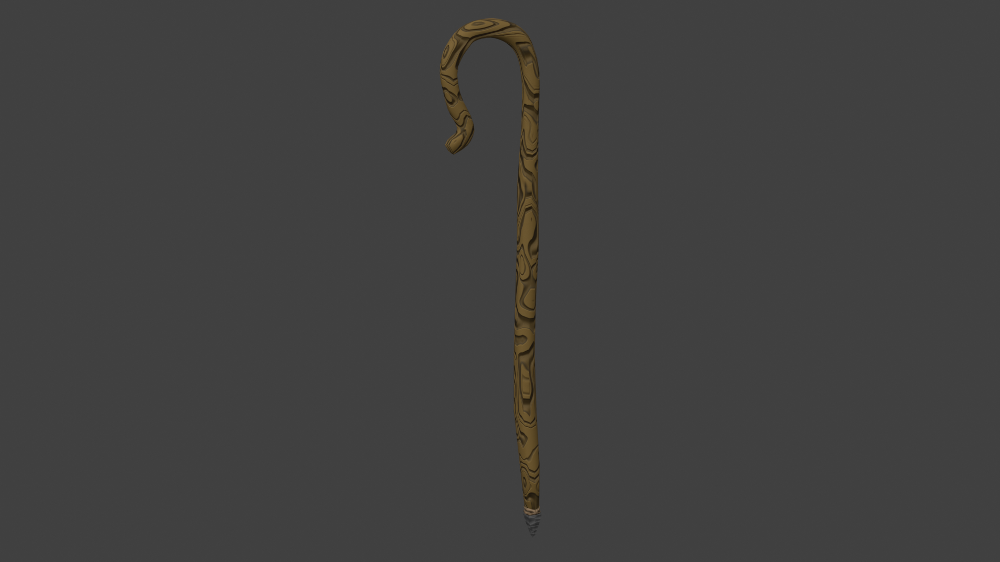
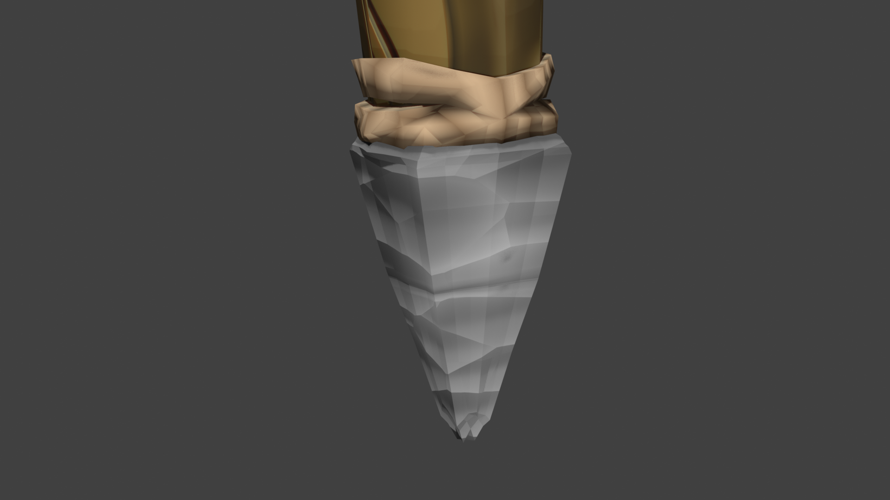
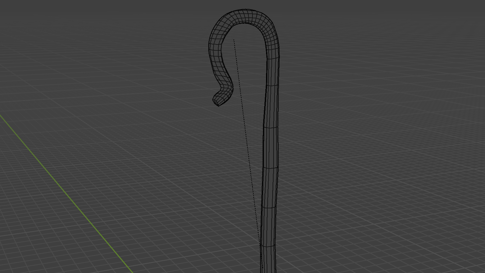

Project 10
Shepherd's Crook
A 3D model made in Blender using low-poly geometry and fully procedural textures to create a stylized wooden shepherd's crook, potentially as a video game asset.

Detailed Description
This section is reserved for your complete production notes. You can detail modeling workflow, topology decisions, procedural material setup, and UV or optimization choices.
Add rendering breakdowns, intended use cases, and what you would refine in a future version.
Project Media


